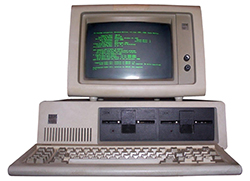
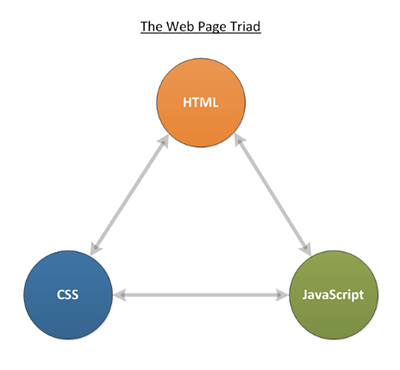

The History of the Internet
The internet made a huge difference in the world, with it people have access to information times easier than before. Internet can be resumed as a mean of communication and a good way to spread information throughout the world as soon as it does’t have geographical locations limits. It was originally created during the cold war to communicate computers that had important and private data of the United States of America and it’s first name was ARPANET. The history of, as the human history (before and after christ), can be divided in two different periods, before the world wide web (www) and after that.
Before the world wide web
As said before, the internet before the world wide web was mainly for important secret information storage during the cold war, with the end of the cold war the american government allowed the universities to explore part of the internet with the condition that they would still collaborating with the data defense technology. In that time, internet was an almost entirely text-based world and the communication was based on TCP/IP protocols, which works in a client/server model of communication, a user machine (client) is provided a service by another computer (server) in the network. In that time, all the services that the computer could provide had to be typed to the computer different from the model that people know in 2018 where you can use a mouse or even the touch screen of a smartphone to perform it’s functions. (Image Source: https://www.pcgamer.com/personal-computers-1980s)
After the world wide web
With the creation of the world wide web by Tim Berners-Lee (a British computer scientist born in London) everything has changed in the virtual world and it has improved substantially until it reached the web as it is known nowadays and it still improving faster than can be seen by people. The computers now have interfaces and can be used easily by users, it has turned them to spread worldwide with people that need or like to use them. The way that the world wide web works is based in three fundamental technologies that remain the foundation of today’s web. Those are HTML (HyperText Markup Language) that is the formatting language for the web, URI (Uniform Resource Identifier) this is a kind of “address” that is unique and used to identify to reach resource the web, and the HTTP (HyperText Transfer Protocol) which allows for the retrieval of linked resources from across the web. With that, the early web community produced some revolutionary ideas that are now spreading even in other sectors that are not technology, those ideas are Decentralisation, Non-discrimination, Bottom-up design, Universality and Consensus. (Image Source: https://mondaynote.com/the-operating-system-fountain-of-youth-ios-39bc1a3ce004)
HTML
HTML is one of the computer languages used to website creation. The websites that are created with it can give the rights for anyone connected to the internet to access it. It is considered easy to learn since it is a basic language and quite powerful in what it can do. It consists in a series of short codes typed into a text-file by the site author. This text will be saved in a HTML file and can be accessed through a browser (such as Google Chrome or Internet Explorer). This browser will be responsible for reading and translating this text into a visible form and hopefully it will render the page in the way that the author of the code intended to show. HTML websites can be created from any text editor from the Notepad or even Brackets IDE as soon as the file is saved as a HTML file.
CSS
Css is an acronym that stands for Cascading Style Sheets, it is a simple design language that intends to simplify the process of creating web pages presentable. It handles the look and feel part of the web page. With the use of CSS, the color of the text, the style of the fonts, the space between paragraphs, how columns are sized and laid out, what colors or background images are used, the design of the layout, responsiveness (how will be the behaviour of the website in different screens or monitor’s size) can be controlled and manipulated in the way that the web site creator wants the web page to look like. It is easy to learn and has a powerful control over the presentation of a HTML document. In most of the cases, it is combined with the markup languages HTML or XHTML.
JAVASCRIPT
JavaScript, also known as JS is a programming language that runs on the web. It is supported by all the famous browsers (Google Chrome, Firefox, Safari and etc) and mobile browsers for phones support it too. It is primarily used to enhance web pages to give a better experience to users. These include dynamically web pages updates, user interface enhancements such as dialog boxes, menus, animations, 3D and 2D graphics, interactive maps, and more. It is usually used with HTML and CSS, the combination of the three results in “The Web Page Triad”.
With the web page triad most of the websites can be developed from blogs or portals or even e-commerce, all of them can be build with those three languages.